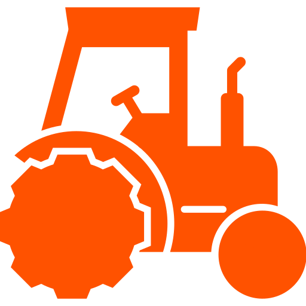

Seja a mudança que você quer no mundo.
Vamos juntos tornar o mundo um lugar melhor!
Inteligência Artificial Generativa
Cultivo Eficiente
A inteligência artificial generativa é um campo emocionante e em rápido crescimento que se concentra na criação de sistemas capazes de gerar conteúdo original, como texto, imagens e música.
O cultivo eficiente é uma abordagem agrícola que visa maximizar a produção de alimentos e recursos, minimizando o desperdício e reduzindo os impactos negativos no meio ambiente.

Agricultura sustentável
A agricultura sustentável é uma abordagem que busca equilibrar a produção de alimentos com a conservação do meio ambiente e a promoção do bem-estar social.